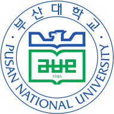

Team TIDYBOY
Biointelligence Lab, Seoul National University
Autonomous Robotics and Artificial Intelligence Lab, Pusan National University
Team TIDYBOY website

Team Tidyboy is a RoboCup@Home team that consists of members from Seoul National University Department of Computer Science and Engineering and Pusan National University School of Electrical and Computer Engineering.
In this project, we aim to develop intelligent mobile cognitive robots with a novel architecture based on machine learning. We envision a new paradigm of autonomous AI with state-of-the-art self-supervised machine learning methods to overcome more restricted paradigms of classical AI which use top-down/rule-driven symbolic and bottom-up/data-driven statistical systems. Inspired by human brain process, we propose an architecture which combines deep learning models with memory models to enable the robot to learn more rapidly, flexibly, and robustly in real-world environments. We investigate these autonomous learning algorithms and demonstrate their capability on mobile robot platforms in real home environment settings. With the proposed architecture, we enhance functions of mobile home service cognitive robots by developing technologies such as navigation, concept building, object recognition and schedule learning.
In this project, we aim to develop intelligent mobile cognitive robots with a novel architecture based on machine learning. We envision a new paradigm of autonomous AI with state-of-the-art self-supervised machine learning methods to overcome more restricted paradigms of classical AI which use top-down/rule-driven symbolic and bottom-up/data-driven statistical systems. Inspired by human brain process, we propose an architecture which combines deep learning models with memory models to enable the robot to learn more rapidly, flexibly, and robustly in real-world environments. We investigate these autonomous learning algorithms and demonstrate their capability on mobile robot platforms in real home environment settings. With the proposed architecture, we enhance functions of mobile home service cognitive robots by developing technologies such as navigation, concept building, object recognition and schedule learning.
Previous Participation in RoboCup
Team Tidyboy
1st place, @Home Domestic Standard Platform League, RoboCup 2023
2nd place, @Home Domestic Standard Platform League, RoboCup 2022
2nd place, @Home Domestic Standard Platform League, RoboCup 2019
Team PNU
Team AUPAIR
4th place, @Home Social Standard Platform League, RoboCup 2018
First place, @Home Social Standard Platform League, RoboCup 2017
Team THORwIn
Team DARwIn
Previous Participation in World Robot Summit
Team Tidyboy